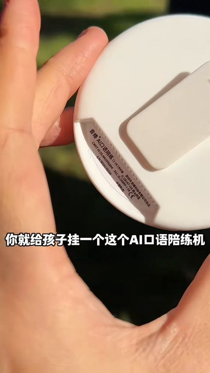
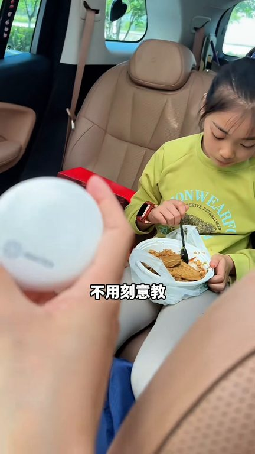

TOP 1 · 代表素材深度拆解
核心放量 稳健
视频为原始素材 HTTPS 链接；点击后加载，建议在网络环境良好时播放。
12.8万素材消耗
3.50%CTR
22.0%类目消耗占比
+0.55pp较类目均值
表现判断
该素材是类目内第 1 名，属于“核心放量”；CTR 高于类目均值。消耗体现承接规模，CTR 体现首屏与定向效率，两项应结合判断，不能仅以单指标下结论。
表达标签
口播三段式证据
开场钩子英语不好的宝马你就给孩子挂一个这个AI口语培认机一个月后你听到孩子蹦出来英语去试别太惊讶妈妈我们还是去露营吧妈妈我们还是去露营刚开始这个就是孩子外交老师推荐的嘛他说越早用越好学英语的学会的话更就是一回事
中段论证你都该想象这个进步是自然吸收的就跟他们一两岁学说话一样不用刻意讲莫名其妙就蹦出来了他这个是中英护议的把这个智能识别关掉就特别撕滑像日常在家亲自互动或者出门六晚在车上的空间时间孩子说一句他就翻译一句你说一句他就翻译一句就所有的对话金牌会全部同步在这个APP上大眼的孩子你可以点击上面陌生的单词直接就进入这个生辞本能不管是小朋友做英语企谋也好还是大朋友做口语练习甚…
结尾转化都不会因为说的太快又听不懂就像一个时时翻译的思较在旁边不啰嗦不刻意教学就直接灌输在孩子这个语言系统里你看很多明星上综艺不都是传承英文交流的吗他们孩子没有一个英语差的如果你觉得孩子英语开口男包搬过一家里没有语言环境你可以试试他的之前我还看到有很多相似功能的都要600多他这个价格蛮合适的你就坚持一个月真…
有效点
- CTR 3.50% 高于类目均值 2.95%，开场或人群指向具备点击优势
- 包含使用或实测表达，能够把抽象卖点转化为可感知证据
迭代动作
- 保留当前高效钩子，复制 3 个变量版本：人物、首句和首帧分别单变量测试
- 中段每 5–8 秒补一次画面变化或证据点，避免同景口播造成信息疲劳
- 复核功效、绝对化及价格稀缺措辞；增加适用边界和效果因人而异提示
合规关注

钩子建立 · 3.0s

场景/问题展开 · 22.7s
卖点证据 · 52.3s
转化收口 · 72.1s
查看完整口播摘要
英语不好的宝马你就给孩子挂一个这个AI口语培认机一个月后你听到孩子蹦出来英语去试别太惊讶妈妈我们还是去露营吧妈妈我们还是去露营刚开始这个就是孩子外交老师推荐的嘛他说越早用越好学英语的学会的话更就是一回事确实不一定是一个说英语的环境每天一到两个小时沉浸是一种环境你都该想象这个进步是自然吸收的就跟他们一两岁学说话一样不用刻意讲莫名其妙就蹦出来了他这个是中英护议的把这个智能识别关掉就特别撕滑像日常在家亲自互动或者出门六晚在车上的空间时间孩子说一句他就翻译一句你说一句他就翻译一句就所有的对话金牌会全部同步在这个APP上大眼的孩子你可以点击上面陌生的单词直接就进入这个生辞本能不管是小朋友做英语企谋也好还是大朋友做口语练习甚至后面语法纸物证和出国交流他都可以包括他这个语速是可以调节的就不管我大宝用还是小宝用都不会因为说的太快又听不懂就像一个时时翻译的思较在旁边不啰嗦不刻意教学就直接灌输在孩子这个语言系统里你看很多明星上综艺不都是传承英文交流的吗他们孩子没有一个英语差的如果你觉得孩子英语开口男包搬过一家里没有语言环境你可以试试他的之前我还看到有很多相似功能的都要600多他这个价格蛮合适的你就坚持一个月真的会感谢我